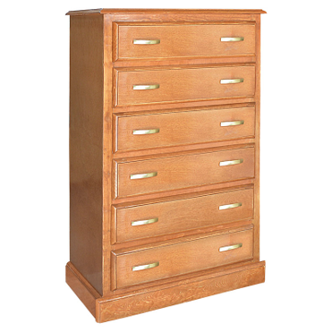

TICS100 - Programación
Listas
Lista
Con esto terminamos para la primera prueba
¿Qué son?
Una lista es una estructura de datos que sirve para almacenar un conjunto de elementos.
¿Qué tipo de elementos?
Pueden ser números, cadenas de textos, otras listas, etc.

Características
- Como las variables tienen nombre.
- Cada espacio se identifica con un número que comienza en
0y termina enn-1. Es decir, si creamos una lista de largon, el primer elemento es el lugar0de la lista y el últimon-1. - El número que identifica la posición en la lista lo llamaremos índice.
- Puedes guardar lo que quieras en cada espacio. Números, palabras o frases.
¿Para qué sirve?
- Para ahorrar código teniendo varios valores en una sola variable.
- Relacionar valores a un concepto en particular por ejemplo, el listado de las notas.
- Ordenar valores
- Trabajar con múltiples valores de forma ordenada y dinámica.
¿Cómo lo creamos?
Para esto tenemos usamos: [ ]
Por ejemplo:
Acceder a un elemento
Para esto debemos indicar el indice del elemento que queremos extraer.
Ejemplo:
Ejemplos
Los string no son listas, pero “funcionan” como listas
Ciclos y Listas
Trucos útiles en python
Mostrar elementos con ciclos
Para mostrar todos los valores aprovechamos la estructura del ciclo for, de tal forma de escribir el código necesario y así recorrer toda la lista.
Esta forma recorre todos los elementos de la lista y permite realizar acciones con cada uno.
Formato
El formato para recorrer listas es el siguiente:
elementoes una variable que guardará cada elemento de la listalistaes el nombre de la lista<<acciones>>es código que se ejecuta para cada elemento de la lista
Mostrar elementos pero por indice
Otra forma de observar cada valor de la lista es usando el índice como identificador.
Dado que el índice está ordenado y sabemos el largo de la lista, fabricamos el rango en donde la variable i debe moverse.
Formato
El formato es el siguiente:
ies una variable que avanza de uno en unolen()es una función que nos entrega el largo de la lista<<acciones>>es código que se ejecuta para cada elemento de la lista
¿Cómo cambiamos un valor particular dentro de una lista?
Muchas veces necesitamos cambiar un valor específico de una lista. Por ejemplo, una lista de edades con valores negativos:
Para esto usaremos: nombreLista[indice] = valor
Ejercicio
Ejercicio 1
Llene una lista con números enteros y calcule la suma de ellos sin usar métodos.
Ejercicio 1
Llene una lista con números enteros y calcule la suma de ellos sin usar métodos.
Importante: Si la lista tiene valores con texto, no podrá sumarlos. Ejemplo: lista = [1,2,4, “Hola”]
Ejercicio 2
Dada una lista con números enteros calcule, cuántos números pares hay en la misma
Ejercicio 2
Dada una lista con números enteros calcule, cuántos números pares hay en la misma
Resumen
Una lista es una estructura de datos que sirve para almacenar un conjunto de elementos.
¿Qué tipo de elementos?
- Pueden ser números, cadenas de textos, otras listas, etc.
Esta estructura de datos tiene sus propios métodos y funciones que nos permitan manipularlas en forma sencilla.
Métodos y Funciones de las listas
append()
Agrega un elemento al final de la lista.
extend()
Agrega los elementos de otra lista al final de la lista actual.
insert(pos, elemento)
Inserta un elemento en una posición específica de la lista.
remove()
Elimina el primer elemento de la lista que coincide con el valor dado.
pop()
Elimina y devuelve el elemento de una posición específica de la lista. Si se entrega sin parámetro, se borra el elemento de la última posición.
index()
Devuelve el índice del primer elemento de la lista que coincide con un valor dado.
count()
Devuelve el número de veces que un elemento aparece en la lista.
sort()
Ordena los elementos de la lista de forma ascendente.
reverse()
Invierte el orden de los elementos de la lista.
len()
Devuelve la longitud de la lista.
max()
Devuelve el valor máximo de la lista.
min()
Devuelve el valor mínimo de la lista.
sum()
Devuelve la suma de todos los elementos de la lista.
any()
Devuelve True si al menos uno de los elementos de la lista es verdadero.
all()
Devuelve True si todos los elementos de la lista son verdaderos.
Ejercicios
Dada una listado de la altura de 15 jugadores de basquetbol ingresados a una lista de forma aleatoria, si los que miden menos de 1,8 mt son chicos, entre 1,8 y 2,0 son medianos y más de 2,0 son grandes. Calcule cuántos hay de cada porte.
Ejercicios
Dada una listado de la altura de 15 jugadores de basquetbol ingresados a una lista de forma aleatoria, si los que miden menos de 1,8 mt son chicos, entre 1,8 y 2,0 son medianos y más de 2,0 son grandes. Calcule cuántos hay de cada porte.
import random
listado = []
for i in range(0,15):
listado.append(random.randint(15,25)/10)
cta_altos = 0
cta_medios = 0
cta_bajos = 0
for elemento in listado:
if elemento < 1.8:
cta_bajos +=1
else:
if elemento >= 1.8 and elemento <= 2.0:
cta_medios += 1
else:
cta_altos += 1
for elemento in listado:
print(elemento)
print("La cantidad de bajos es: ", cta_bajos)
print("La cantidad de medios es: ", cta_medios)
print("La cantidad de altos es: ", cta_altos)